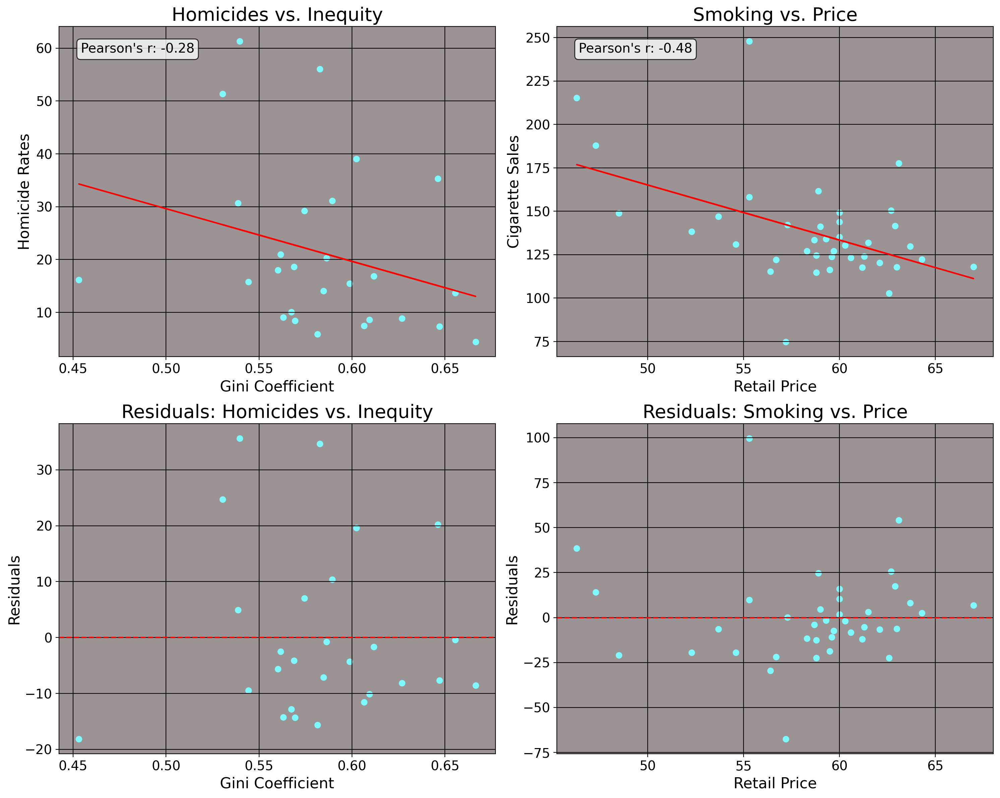
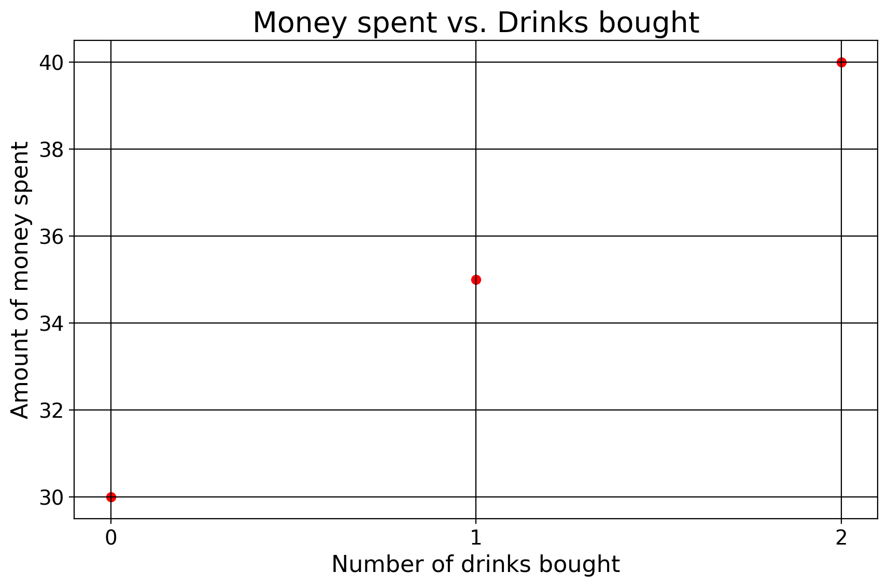
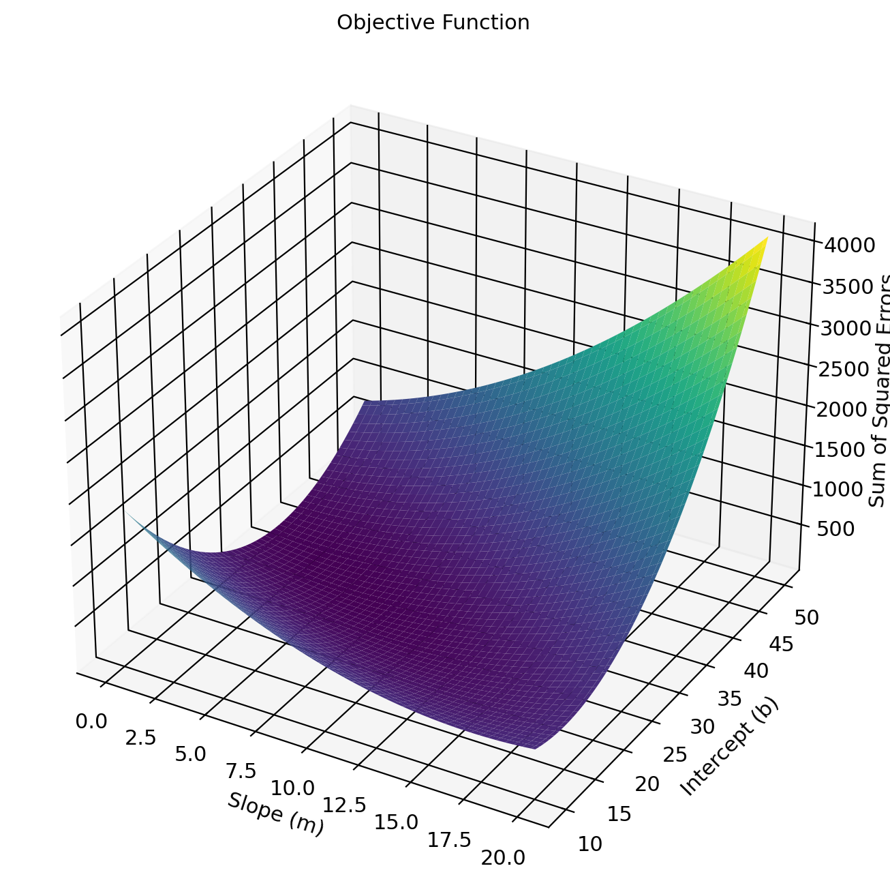
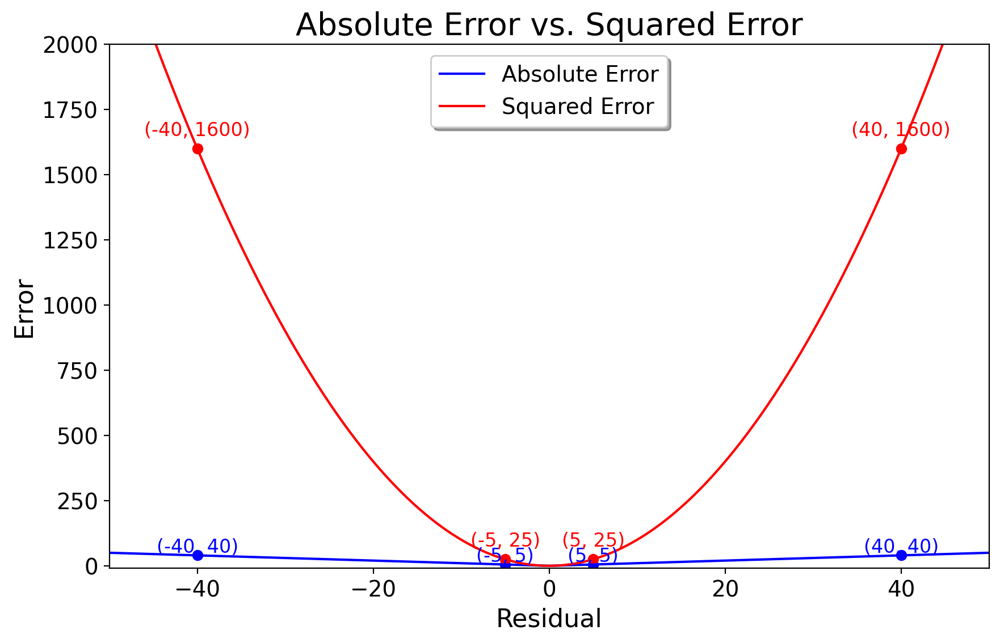
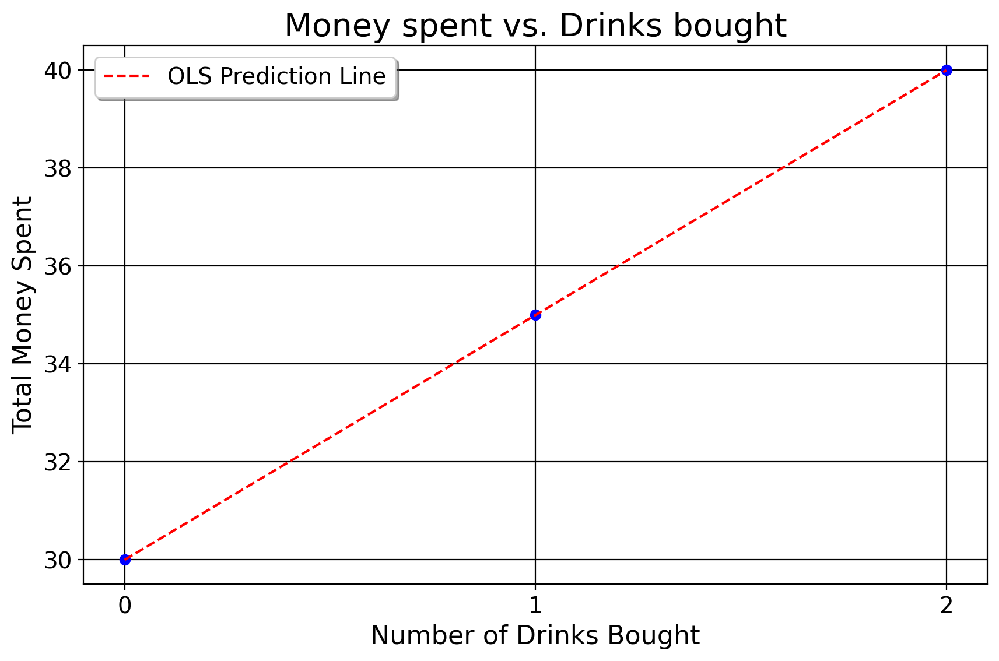

7 OLS Explained
This is the chapter on regression. We begin by covering data types. Then, we review the idea of a function and how it relates to a line. After a review of derivatives, we finally cover the computation of regression coefficients, inference, fit, and OLS assumptions.
Important
This is a statistics course, not a math course. However, math is the language which underlies statistics. This is the only part of the course where we use any calculus to explain ideas. Furthermore, you’ll never be expected (from me) to use calculus for any of your assignments.
With this said, I do use the calculus to explain what is going on in regression. The calculus explains the why, which I think is always important to know if you’re implementing or interpreting regression. I presume however that you are like myself when I was in undergrad, in that you’ve either never taken calculus (me) or had little exposure to it. So, I link to tutorials on the calculus concepts that we employ here. Consult these links, if you’d like (they sure helped me in preparation of this chapter). However, they are completely optional. I try to explain everything as best I can, so they are provided as a supplement to the curious who want a better understanding.
7.1 Data Structures
7.1.1 A Primer on Data Types
Up until this point, we have presumed that we are working with only one collection of units at one time point. This is called a cross-sectional dataset, where we have \(N>1\) units and \(T=1\) time periods.
| Country | Year | Units | Value |
|---|---|---|---|
| Mexico | 2000 | 1 | 50 |
| Guatemala | 2000 | 1 | 45 |
The opposite of this is called a time-series dataset, where we have \(N=1\) units and \(T>1\) time periods.
| Country | Year | Units | Value |
|---|---|---|---|
| Mexico | 2000 | 1 | 50 |
| Mexico | 2001 | 1 | 55 |
A panel dataset is where \(N>1\) and \(T>1\).
| Country | Year | Units | Value |
|---|---|---|---|
| Mexico | 2000 | 1 | 50 |
| Mexico | 2001 | 1 | 55 |
| Guatemala | 2000 | 1 | 45 |
| Guatemala | 2001 | 1 | 50 |
Important
Because I think it’s valuable to work with panel data early (i.e., comparing the same units over more than one time point), all of the coruse’s examples rely on panel data structures. However, this but scratches the surface. There are entire course sequences on panel data and time-series data.
7.1.2 A Primer on Variable Types
For any dataset you ever work with, you’ll likely have different variables (columns). Regression is no exception. The predictors for regression must be numeric, naturally. These take a few different types. Note that if it is not numeric, we call it a “string”.
The most common kind is a ratio variable (a value we may express as a fraction/continuous variable), such as the employment rate.
| State | Year | Employment Rate (%) |
|---|---|---|
| Alabama | 1990 | 55.3 |
| Alabama | 1991 | 56.1 |
| California | 1990 | 62.1 |
| California | 1991 | 61.5 |
| Georgia | 1990 | 58.4 |
| Georgia | 1991 | 59.2 |
A dummy variable is a binary variable that indicates the presence or absence of a characteristic. A dummy variable (also called an indicator or categorical variable) is a variable that takes on the values 0 or 1. For example, a simple dummy indicates whether a respondent in a survey is a male or a female. In this case, the number 1 “maps” on to the value for male, and 0 for female. Note that in this case, the simple average of these respective columns returns the proportion of our observations that are male or female.
| Respondent ID | Gender (Male=1, Female=0) |
|---|---|
| 1 | 1 |
| 2 | 0 |
| 3 | 1 |
| 4 | 0 |
Dummies can also be used to capture unobserved variation across groups. For instance, when predicting homicide rates across states like Alabama, California, and Georgia for 1990 and 1991, we can include dummy variables for each state. These dummies help account for unique, stable characteristics of each state, such as culture, that are hard to measure directly. In other words, if we think something “makes” Alabama, Alabama, compared to California or Georgia, we can include these kinds of variables to capture that unobserved variation. When including dummies in regression, we must always omit one category from the regression (for reasons we will explain below). So, for example, we could include Alabama/Georgia dummies or Georgia/California dummies, where California and Alabama would be what we call the reference group.
| State | Year | Alabama (1/0) | California (1/0) | Georgia (1/0) |
|---|---|---|---|---|
| Alabama | 1990 | 1 | 0 | 0 |
| Alabama | 1991 | 1 | 0 | 0 |
| California | 1990 | 0 | 1 | 0 |
| California | 1991 | 0 | 1 | 0 |
| Georgia | 1990 | 0 | 0 | 1 |
| Georgia | 1991 | 0 | 0 | 1 |
There is also a notion of an ordinal variable, where the data at hand must obey a specific order. Suppose we ask people in a survey how religious they are on a scale from 1 to 10, where 1=Atheist and 10=Extremely Religious. Here, order matters, because 1 has a very different meaning from 10 in this instance. An ordinal variable has a clear, ordered ranking between its values.
| Respondent ID | Religiosity (1-10) |
|---|---|
| 1 | 3 |
| 2 | 7 |
| 3 | 5 |
| 4 | 10 |
These are the data types you will generally work with. When we move on to real datasets, their meaning will become much more apparent.
7.1.3 Review of Lines and Functions
In middle school, we learn about the basics of functions in that when we plug in a number, we get another number in return. If you’re at the grocery store and grapes are 1 dollar and 50 cents per pound, we just weigh the grapes and multiply that number by 1.5. This could take the form of \((0,0), (1,1.5), (2,3)\), and so on. In fact, we can represent these data points in a table like this
| x | y |
|---|---|
| 0 | 0 |
| 1 | 1.5 |
| 2 | 3 |
These points form a line, the equation for which being \(y=mx+b\). We can also think of this line as a function. It returns a value of \(y\) given some values for previous expenditures and pounds of grapes. Here, \(y\) is how much we pay in total, \(m\) is the rate of change in how much we pay for every 1 pound of grapes bought, and \(b\) is our value we pay if we get no grapes.
For this case, the function for the line is \(y=1.5x\). For here, \(b=0\) because in this case, how much we pay is a function of pounds of grapes only. We could add a constant/\(b\), though. Suppose we’d already spent 10 dollars, and now how much we spend is a function of both some previous constant level of spending, and new amount of grapes bought. Now, our function is \(y=1.5x+10\). The way we find the \(m\) and \(b\) for a straight line is the “rise over run” method, in this case
\[ m = \frac{y_2 - y_1}{x_2 - x_1} = \frac{3 - 0}{2 - 0} = \frac{3}{2} = 1.5 \]
Lines fit to points sometimes have discrepancies between the line and the data we see. We call this the residual, or \(\hat \epsilon = y-(mx+b)\). Also notice how the rate of change, or \(1.5x\), is the same at every point on the line: in this instance, you pay a dollar and fifty cents for any amount of grapes we get.
Regression, fundamentally, is about fitting a line (or a plane) to a set of data given some inputs. Going forward, I will use the words “outcome variable” or “dependent variable” to refer to the thing that we are studying the change of, and “predictors”, “covariates”, or “independent variables” to refer to the variables we think affect our outcome. In the grape example, our outcome is the total amount of money we spend, and the singular predictor we use is how many pounds of grapes we get. With all this being said though, this example is very simplistic. After all, the necessary information is known to us up front (price and weight). But… what if the data we have at hand are not nice and neat in terms of a function? Suppose we consider a more challenging example.
Take the idea of predicting crime rates in Brazilian states in the year 1990 using the inequality level as a predictor, or data on the consumption of cigarettes in American states in the year 1980 using price as a predictor. We would presume some function exists that generates the crime rate for that Brazilian state in that year, or that consumption level for that American state in that year. We would also imagine, naturally, that the covairates inequality and tobacco price would affect these outcomes. But, does it make sense to expect for some deterministic function to predict these values, given some input? No.
The homicide rate or cigarette consumption rate in any state anywhere is not guaranteed. In some states, homicides or tobacco consumption is high, other times its low. Why? Well for homicide, some states are wealthier and some are poorer. Some states vary by racial compositions, or will differ by factors like age composition, alcohol use, and gun ownership. Thus… some cities have high homicide rates, others have low homicide rates. We can reason accordingly for cigarette consumption of American states. Naturally, one reason for this would be the price of cigarettes, as one might expect, since people tend to not want to buy more of a good as the price increases (well… usually.) The number of young people in that state may mean that younger people are risk takers and may be more likely to smoke than adults (or alternatively, young people may perceive smoking as something for older adults and smoke less). Levels of alcohol taxation may matter as well, since alcohol may be a substitute for tobacco, so states with higher taxation may smoke more, on average. Also, plain and simple measures like culture (and other unobservable things) may play a role. We can plot these data for illustration

Here, I draw a line between these input variables and the observed outcomes in question. The \(x\) axis represents, respectively, inequality and price and the \(y\) axes represent homicide rates and cigarette consumption. It is quite obvious though that no deterministic function exists here for either of these cases, as we have residuals. The line imperfectly describes the relationship between 1) inequality and homicide and 2) retail price of cigarettes and cigarette consumption per capita. So, we can’t find one line that fits perfectly to all of these data points. But, even if we cannot find a perfect, deterministic function that fits to all of these data points, how about we find the optimal line in the sense that it best estimates \(m\) and \(b\) by having the lowest possible values for \(\hat \epsilon\) at every point on the line? We can see how this relates to the grape analogy above: the line passes through all of the observed data points, meaning it is optimal in the sense that the line has the lowest possible residual values.
7.2 Arrivederci, Algebra, Ciao Derivatives.
To do this though, we’ve now reached a point in the course where simple algebra is no longer our best guide. We now must use calculus, specifically the basics of derivatives and optimization. I mentioned the word optimal above to refer to the fit of the line, but now we’re going to get a much better sense of what is meant by this.
Important
Okay, so here I’m kind of lying. You actually don’t need to say farewell to algebra (completely) to derive regression estimates, but that process “requires a ton of algebraic manipulation”. For those brave of heart who know algebra well, you can probably just watch the series of videos I just linked to and skip to this section of the notes, but I do not recommend this at all. I find the calculus way via optimization a lot more intuitive.
Firstly though, a primer on derivatives. The derivative is the slope of a curve/line given a very small change in the value of the function. It is the instantaneous rate of change for a function. We do not need derivatives for linear functions, since we know what the rate of change is from real life (“a dollar fifty per pound”, “two for five”, etc.). For example, the derivative of \(50x=y\) is just 50, since that is the value y changes by for any increase in \(x\). For a constant (say, 5), the derivative is always 0, since no matter what value \(x\) takes, its value does not change at all.
When we set the first derivative of a function to 0 and solve, we reach an optimal point on the original function, usually. An optimal point (or “critical point”) is a place on the function where the value of the function is at the lowest or highest possible value the function can reach over a given set of inputs. We can find the critical points by solving an optimization problem. An optimization problem takes the form of \(f(x)\) \[ \operatorname*{arg min}_{\theta \in \Theta } f(\theta) \: \mathrm{ s.t. \:} g(\theta) = 0, h(\theta) \leq 0, \] where there’s some function \(f(\theta)\) (called the objective function) that is minimized over a set of \(g(\theta)\) equality constraints and \(h(\theta)\) inequality constraints. The word “\(\operatorname*{arg min}\)” here means “argument of the minimum”. It means that we are seeking the values, or arguments, which minimize the output of that function. The symbols underneath this, \(\theta \in \Theta\) represents the coefficients we are solving for. These are the values which will minimize the function. But this is all abstract. Let’s do some examples.
7.2.1 Power Rule
Suppose we shoot a basketball while we stand on a 2 foot plateau, which produces a trajectory function of \(h(t)= −5t^2 +20t+2\). Here \(h(t)\) is a function representing the ball’s height over time in seconds. The \(-5t^2\) reflects the downward pull of gravity. The \(20t\) means that you threw the ball at 20 miles per hour originally. And the 2 means that we’re standing 2 feet above solid ground. We can find the maximum height of the ball by taking the derivative of the original quadratic function and solving it for 0. In this case, we use the power rule for derivatives. The power rule for dertivatives, expressed formally as \(\frac{d}{dx}(x^n) = nx^{n-1}\), is where we subtract the exponent value of a function by 1 and place the original value to be multiplied by the base number. For example, the derivative of \(y=2x^3\) is just \(6x^2\), since \(3-1=2\) and \(2 \times 3 = 6\). The derivative of \(x^2\) is \(2x\). With this in mind, we set up our objective function
\[ H = \operatorname*{arg max}_{t \in \mathbb R_{> 0}} \left(−5t^2 +20t+2 \right). \]
where \(t\) (a postitive real number) is time in seconds, expressed as \(\mathbb{R}_{>0} = \left\{ t \in \mathbb{R} \mid x > 0 \right\}\). We seek the value of \(t\) where the ball is at the maximum height possible.

We then follow the rules I’ve explained above, differentiating with respect to (w.r.t) each term.
\[ \begin{aligned} & h(t) = -5t^2 + 20t + 2 = \\ & \dfrac{\mathrm{d}}{\mathrm{d}t}(-5t^2) + \dfrac{\mathrm{d}}{\mathrm{d}t}(20t) + \dfrac{\mathrm{d}}{\mathrm{d}t}(2)= \\ & t(5\times 2) +1(20) = \overbrace{-10t + 20}^{\text{Derivative}} \end{aligned} \]
Let’s break this down. The derivative of \(-5x^2\) must be \(-10x\) by the power rule. All this means is that for every additional second, the ball falls by ten more feet due to gravity. The 20 reflects the initial velocity that we threw the ball at, or the 20 feet per second I mentioned above. And the derivative for 2 is 0 because time has no influence on the height of ground we threw the ball from, we started from where we started from, gravity is what it is, and thus this should not affect the rate of change of the height of the ball. We can then solve the derivative for 0 to find the optimal point.
\[ \begin{aligned} & -10t + 20=0 \Rightarrow \\ & -10t = -20 \Rightarrow \\ & \frac{-10t}{-10} = \frac{-20}{-10} \Rightarrow \\ & \boxed{t=2} \end{aligned} \]
Okay, so the ball is at its zenith after 2 seconds. We may now plug in the value of 2 into the original function to get the maximum height of the ball:
\[ \begin{aligned} & -5t^2 + 20t + 2 \Rightarrow \\ & -5(2)^2 + 20(2) + 2 \Rightarrow \\ & -20+40+2=22 \end{aligned} \]
From here, we can see why we set the derivative to 0. Since the derivative is the rate of change of the function at a specific point, and we know the ball is rising vertically since we shot it upwards, we also know the ball must be slowing down over time as it rises. The maximum point is simply the height where the speed of the ball is 0 miles per hour, and therefore not changing anymore so that it may be pulled to earth.
| \(t\) | \(h(t)\) | \(h'(t)\) |
|---|---|---|
| 0 | 2 | 20 |
| 1 | 17 | 10 |
| 2 | 22 | 0 |
| 2.5 | 21.25 | -5 |
We can know that we are at a maximum by taking the second derivative of our function, which would just be \(-10\). When the second derivative, expressed as \(\dfrac{\mathrm{d}^{2}}{\mathrm{d}t^{2}}< 0\), we know that we are at a maximum point. And since \(-10 < 0\), we know that this is a maximum point.
7.2.2 Chain Rule
The next rule of differentiation to know is something called the chain rule. The chain rule is called that because of the chain reaction we can think of when we think of the way the value of one function affects the value of another function. In mathematics this is called a composite function.
A common example in economics is where we wish to maximize profits. Suppose we are the manager of shipping for a company. Our job is to ship kilos of product to a city so that a wholeseller, or a distributor, may sell to vendors who will in turn sell to customers. However, we are not doing business in a competitive market. The local distributor has a monopoly over entry ports, and is able to set prices. The distributor will give us 75,000 dollars per \(x\) kilos of product we give them. As the sellers, we must come up with the right amount of kilos to sell such that we maxmize our profits, given the price we face. Ideally, we could snap our fingers and sell them the product in an unlimited manner. In other words, the profit we’d make per ki would simply be \(r(x) = 75x\).
But unfortunately, we do have costs. We have a set of fixed costs comprising baseline expenditures of doing business with the distributor. For example, we may have transportation costs to move our product from home to the city, a certain amount of money for fuel, and other costs that we simply cannot avoid paying in order to do business at all (in the ball analogy, this would be how far we are off the grouund originally). We have variable costs which are things that we as the producers, in the very short run, have direct control over, say, how many drivers we have or how much plastic we use, the number of workers on our farms, and so on (in the ball analogy above, this would be how hard we throw the ball). And finally, we have marginal costs, or the costs that we bear as the business for each new ki produced (the downward pull of gravity in the above example).
For this example, our cost function is \(c(x)=0.25(x+6)^2+191\) (note that all of these numbers are in 1000s, but we shall solve the profit exactly as I’ve written it). As we’ve discussed above, the constant will at some point go away, and we will be left with only the factors of production that actually change (our marginal and variable costs). But I’m getting ahead of myself. First, we have to think about what profit means.
In microeconomic theory, our profit function is \(\pi(x)=r(x)-c(x)\), or the difference between how much we make in dollars versus how much it costed us in dollars to produce all that we’ve sold. If we produced nothing, we’d be losing money since we still have to pay fixed costs (200 in this case). However, as we produce one more ki, we slowly increase the amount of money we make until our revenue equals our total costs. This is known as the break even point, when we’re not profiting or operating at a loss, we’re making just enough to remain in business. After this point, as we produce and sell more, our revenue begins to grow relative to our costs (say, as we get more efficient in distributing workers and tools to make the product). However at some point, the rate of change of profit will be equal to 0. Why? Well, we can’t keep producing forever because we do not have infinite resources. This means that while we may detect a change in profits from 1 kilo to 100, at some point it will not make sense to produce another kilo because the cost it takes to make another kilo is greater than the revenue we would make from selling it. While we’d still be making profit at that level, or profits would not be maximized.
Like the ball example, we’re looking to ascend the profit function by producing more until the rate of change of profit is at 0. So, to maximize profit, we differentiate each component of the profit function, \(\dfrac{\mathrm{d}\pi(x)}{\mathrm{d}x} = \dfrac{\mathrm{d}r(x)}{\mathrm{d}x} - \dfrac{\mathrm{d}c(x)}{\mathrm{d}x}\). When we take the derivative of both revenue and cost functions, combine them together, and solve for 0, we can find the point at which our overall profits are maximized. As before, we may express this as an objective function, where our objective is to find the level of production value that maximizes our profit. Our objective function in this case looks like
\[ \operatorname*{arg max}_{x \in \mathbb R} \left(\underbrace{75x}_{r(x)} - [\underbrace{0.25(x+6)^2+191}_{c(x)}] \right). \] We consider these functions separately \[ \begin{aligned} &r(x) = 75x \\ &c(x) = 0.25(x+6)^2 + 191 \end{aligned} \] and then take their derivatives. Beginning with revenue, \[ \begin{aligned} &r(x) = 75x \\ &\boxed{\dfrac{\mathrm{d}r}{\mathrm{d}x} = 75}. \end{aligned} \]
Simple enough. Profit increases by 75,000 per ki sold. Now, for \(c(x) = 0.25(x+6)^2 + 191\), we apply the chain rule. The outer function (or everything outside the parentheses here) is \(u(y) = 0.25y^2 + 191.\) The inner function is \(y(x)=x+6\).
First, we differentiate the outer function \(u(y)\) by applying the power rule:
\[ \frac{\mathrm{d}u}{\mathrm{d}y} = 0.25 \cdot 2y = 0.5y. \]
The constant vanishes, and the 2 from the quadratic comes down and we multiply it by 0.25. Now we differentiate the inner function:
\[ \frac{\mathrm{d}y}{\mathrm{d}x} = \frac{\mathrm{d}}{\mathrm{d}x}(x + 6) = 1. \]
The chain rule states: \(\frac{\mathrm{d}}{\mathrm{d}x} u(y(x)) = \frac{\mathrm{d}u}{\mathrm{d}y} \cdot \frac{\mathrm{d}y}{\mathrm{d}x}\). Applying the chain rule:
\[ \frac{\mathrm{d}u}{\mathrm{d}x} = \frac{\mathrm{d}u}{\mathrm{d}y} \cdot \frac{\mathrm{d}y}{\mathrm{d}x} = 0.5y \cdot 1 = 0.5(x + 6). \]
So, we are left with:
\[ \frac{\mathrm{d}u}{\mathrm{d}x} = 0.5(x+6). \]
After distributing the one-half term:
\[ 0.5(x+6) = 0.5x + 0.5 \cdot 6 = 0.5x + 3. \]
Therefore, the final result is:
\[ \boxed{0.5x + 3}. \]
Next, we combine the derivatives together in the original equation
\[ \begin{aligned} &\dfrac{\mathrm{d}\pi(x)}{\mathrm{d}x} = \dfrac{\mathrm{d}r(x)}{\mathrm{d}x} - \dfrac{\mathrm{d}c(x)}{\mathrm{d}x} = \\ & 75 - (0.5x + 3) = \\ &75-3-0.5x = \\ &72 - 0.5x. \end{aligned} \]
Now we solve for 0:
\[ \begin{aligned} &72 - 0.5x = 0 \\ &72= 0.5x \\ &\frac{72}{0.5}=\frac{0.5}{0.5}x \\ &\boxed{\text{Optimal Production Level: }144=x}. \end{aligned} \]
To verify that we are maximizing, we take the second derivative of the profit function, \(\dfrac{\mathrm{d}^2 \pi}{\mathrm{d}x^2} = \dfrac{\mathrm{d}^2 r}{\mathrm{d}x^2} - \dfrac{\mathrm{d}^2 c}{\mathrm{d}x^2}\). To do this, we do: \[ \begin{aligned} &\dfrac{\mathrm{d}}{\mathrm{d}x}=[75 - 0.5x - 3] = -0.5. \end{aligned} \] The derivative of the two constants are both 0, so those are deleted. All we’re left with is the linear term. Since \(\dfrac{\mathrm{d}^2 \pi}{\mathrm{d}x^2}<0\), we are at a maximum point. Therefore, the number of kilos we should sell our distributor is 144. What is profit? \((75x) - (0.25(x+6)^2 + 191)\) where \(x = 144\). First, calculate \((x+6)^2\): \[ (x+6)^2 = (144+6)^2 = 150^2 \] \[ 150^2 = 22500 \]
Next, calculate \(0.25(x+6)^2\): \[ 0.25(x+6)^2 = 0.25 \times 22500 = 5625 \]
This is the sum of our marginal costs and the variable costs. Next we calculate \(75 \times 144\): \[ 75 \times 144 = 10800. \]
This is our total revenue. Now we add the marginal, variable, and fixed costs: \[ 5625 + 191 = 5816. \]
Subtract total revenue from total costs \[ 10800 - 5816 = 4984 \]
Therefore, since I said all these numbers were in 1000s, our profit from 144 kis sold is \(\boxed{4,984,000}\). To verify that none of what we just did is voodoo, we can check this by plotting the profit function.

Ok, all done for now. We will use derivatives to solve for the value which minimizes the sum of residuals squared. This is known as ordinary least squares regression (OLS), also called linear regression, or simply just “regression”. OLS is the main estimator you’ll use for this class, and it is the main foundation of econometric analysis for public policy research. It will be much more involved than what we just did, but this provides the mathematical foundation for regression as an estimator.
7.3 An Extended Example
To introduce OLS, we can return to the equation of a line (\(y=mx+b\)) where \(m\) and \(b\) are variables. Unlike the above examples where \(m\) and \(b\) were once known variables, now they are unknown quantities we must solve for. Below, \(m\) and \(b\) will take on the values of \(\beta_1\) and \(\beta_0\) respectively. With OLS, we have multiple predictors (typically), each of which affect the output of the function differently.
In the multivariable case, we take the partial derivative w.r.t. each variable (that is, assuming that the other variables do not change). If this seems at all abstract to you, I will provide a detailed, clear derivation of the betas. Note that for all of the steps below, Stata, R, or Python does (and optimizes!) this process for you. I only provide this derivation so you have a source to refer to when you wish to know how and why, exactly, the machine returns the numbers that it returns to you. I also believe a clear explanation of the math will help you understand how to interpret the results that we get.
Before we continue, let’s fix ideas. Suppose we wish to attend a nightclub and we wish to express how much we pay for that evening as a function (our outcome variable, a ratio level variable). At this nightclub, our outcome is a function of two things. We pay some one-time cost of money to enter, and then we pay some amount of money per new drink we buy (where number of drinks is also a ratio level variable). I say “some” because unlike the real world where we would know the price and entry fees by reading the sign, in this case we wish to estimate these values with only two known variables: how many drinks we bought and how much we paid.

7.3.1 List the Data
Say that we have data that looks like \((0, 30), (1, 35), (2, 40)\), where \(x\)= number of drinks we buy (0,1,2) and \(y\)=amount of money we spend that evening (30,35,40). In spreadsheet format, this looks like:
| x | y |
|---|---|
| 0 | 30 |
| 1 | 35 |
| 2 | 40 |
If you want to, calculate the rise-over-run of these data points to derive \(m\) and see what the answer might be in the end. Below though, we proceed by deriving what \(m\) must be.
\[ m = \frac{35 - 30}{1 - 0} = \ldots \]
7.3.2 Define Our Econometric Model
We begin by defining our model. That is, we specify our outcome and the variables which affect our outcome (the values we’re solving for, entry price and drink cost). Our model of how much we pay given some entry fees and additional drink costs looks like:
\[ y_i = \beta_0 + \beta_1x_i \]
Here, \(y_i\) is the total amount of money we spend that evening in dollars given the \(i\text{-th}\) drink, \(\hat{\beta}_{0}\) is how much we pay (also in dollars) to enter, \(\hat{\beta}_{1}\) is how much we pay for the \(i\text{-th}\) drink, and \(x\) is the total number of drinks we get. Nothing at all about this is different, so far, from anything we’ve discussed above. I’ve simply substituted \(m\) and \(b\) with the Greek letter \(\beta\) (“beta”) into the already familiar equation for a line.
7.3.3 Write Out the Objective Function
Now that we have our model, next let’s think about what the objective function would be. We already know that we wish to minimize the residuals of the OLS line. So, we can represent the objective function for OLS as \[ \begin{aligned} & S = {\text{argmin}} \sum_{i=1}^{n} \hat{\epsilon}^{2} \\ & S = {\text{argmin}} \sum_{i=1}^{n} \left( y_i - \hat{y} \right)^{2} \\ & \text{where } \hat{y} \text{ is defined as} \\ & S = \underset{\hat{\beta}_0,\hat{\beta}_1}{\text{argmin}} \sum_{i=1}^{n} (y_i - (\overbrace{\hat{\beta}_0 + \hat{\beta}_1x}^{\text{Predictions}}))^2. \end{aligned} \]
As above, we call the solutions \(\hat{\beta}_0,\hat{\beta}_1\) optimal if they return the lowest possible values the function \(S\) can produce. What values can \(S\) produce? The sum of the squared residuals. The sigma symbol \(\sum_{i=1}^{n}\) means we are adding up the \(i\text{-th}\) squared residual to the \(n\text{-th}\) data point/number of observations (in this case 3). This means that the line we compute will be as close as it can be to the observed data at every single data point. By the way, just to show the objective function is not an optical illusion or arcane expression, we can literally plot the objective function in three dimensions, where we have the slope and intercept values plotted against our total squared residuals.

I plot the values returned by the objective function given the datapoints and some value for our coefficients. Of course, we wish to get the values for the betas which produce the lowest possible values for this plane. Clearly, the intercept can’t be 50 and the slope 20 (as this maximizes the residuals!).
The middle formula, \(\left( y_i - \hat{y} \right)^{2}\), re-expresses the residuals. This expression should look familiar. Recall the formula for the variance of a variable \(\text{Var}(X) = \mathbb{E}[(X - \mathbb{E}[X])^2]\) ? Here, we are taking our real observations \(y\) and subtracting some expected value \(\hat{y}\) (y-hat) from it. Because we are minimizing the residuals (or, the model prediction error), another way of thinking about OLS is that is the line that maximizes the explained variance given our independent variables. The lines that has the least-wrong predictions is also the line that explains its variation patterns best.
As with the variance, one may ask why we are squaring the summed \(\hat{\epsilon}_i\), instead of say the absolute error. First of all, minimizing the raw sum of the predicted residuals (that is, without squaring them) is a non-differentiable function. We could use the raw sum of the errors as an objective function (called the mean absolute error instead of the mean squared error), but have fun doing that, as due to the non-differentiable nature of the absolute value function, we would need to use numerical methods, such as gradient descent, to compute its solution. By no means impossible… just computationally less tractable.
Using the squared residuals means that we are dealing a quadratic function which, as we did above, is easily differentiable. The squaring of residuals also penalizes worse predictions. Indeed, just as with the variance, all residuals should not be created equally. If the observed value is 20 but we predict 25, the residual is -5. Its squared residual is 25. But if the observed value is 40, and we predict 80, the “absolute” error is -40 and the squared error of is 1600. If we did not square them, we would be treating a residual of 5 as the same weight as a residual of 40. For proof, we can plot these

7.3.4 Substitute Into the Objective Function
First, we can substitute the real values as well as our model for prediction into the objective function. We already know the values x-takes. You either buy no drinks, 1 drink, or 2. So with this information, we can now find the amount of money we pay up front (\(\hat{\beta}_0\)) and how much it costs for each drink (\(\hat{\beta}_1\)) \[ \begin{aligned} S = &\underbrace{(30 - (\hat{\beta}_0 + \hat{\beta}_1 \cdot 0))^2}_{\text{Term 1}} + \\ &\underbrace{(35 - (\hat{\beta}_0 + \hat{\beta}_1 \cdot 1))^2}_{\text{Term 2}} + \\ & \underbrace{(40 - (\hat{\beta}_0 + \hat{\beta}_1 \cdot 2))^2}_{\text{Term 3}} \end{aligned} \]
And when we look at the notation carefully, we see all of this makes sense: we are adding up the differences between our outcome, and the predictions of our model.
7.3.5 Take Partial Derivatives
To find the values of \(\hat{\beta}_0\) and \(\hat{\beta}_1\), we take the partial derivatives of \(S\) with respect to (w.r.t.) \(\hat{\beta}_0\) and \(\hat{\beta}_1\). Here is a short sketch of how we do this: For simplicity, I break this into two sections, one section per coefficient. In this case, the chain rule and power rules for differentiation are our friends here. To hear more about combining the power rule and chain rule, see here. First, we differentiate w.r.t. \(\hat{\beta}_0\) (entry fees), then we do the same for \(\hat{\beta}_1\) (drink fees).
- Partial derivative w.r.t. \(\hat{\beta}_0\):
Here is our full objective function:
\[ \frac{\partial S}{\partial \hat{\beta}_0} = \frac{\partial}{\partial \hat{\beta}_0} \left[ (30 - (\hat{\beta}_0 + \hat{\beta}_1 \cdot 0))^2 + (35 - (\hat{\beta}_0 + \hat{\beta}_1 \cdot 1))^2 + (40 - (\hat{\beta}_0 + \hat{\beta}_1 \cdot 2))^2 \right]. \]
By the chain rule, we can take the partial derivative by applying the power rule to the outer functions and the linear differentiation rule to the inner functions: \[ \frac{\partial S}{\partial \hat{\beta}_0} = \frac{\partial}{\partial \hat{\beta}_0} (30 - \hat{\beta}_0+ \hat{\beta}_1 \cdot 0)^2 + \frac{\partial}{\partial \hat{\beta}_0} (35 - (\hat{\beta}_0 + \hat{\beta}_1))^2 + \frac{\partial}{\partial \hat{\beta}_0} (40 - (\hat{\beta}_0 + 2\hat{\beta}_1))^2. \]
In the first term, we have \(\hat{\beta}_1 \cdot 0\), so we keep the other part of the function but the \(\hat{\beta}_1\) goes away since that’s what anything multiplied by 0 means. So, the quadratic power goes outside the parentheses, and the derivative of \(-\hat{\beta}_1\) is just \(-1\). So by application of the chain rule, we get this result:
\[ \begin{aligned} & \frac{\partial S}{\partial \hat{\beta}_0} = 2(30 - (\hat{\beta}_0)) \cdot (-1) + 2(35 - (\hat{\beta}_0 + \hat{\beta}_1 \cdot 1)) \cdot (-1) + 2(40 - (\hat{\beta}_0 + \hat{\beta}_1 \cdot 2)) \cdot (-1). \end{aligned} \]
See how all these three terms are multiplied by \(-1\) and \(2\)? Well, by distributive property, we know we can factor out the 2 and negative 1. That returns this result:
\[ \frac{\partial S}{\partial \hat{\beta}_0} = -2 \left[ (30 - \hat{\beta}_0) + (35 - \hat{\beta}_0 - \hat{\beta}_1) + (40 - \hat{\beta}_0 - 2\hat{\beta}_1) \right]. \]
Next I rearrange everything inside of the brackets: \[ \begin{aligned} &(30 + 35 + 40) - (\hat{\beta}_0 - \hat{\beta}_0 + \hat{\beta}_0) + (\hat{\beta}_1 - 2\hat{\beta}_1) = \\ &(105)+(- 3\hat{\beta}_0)+(-3\hat{\beta}_1). \end{aligned} \] Finally, we just distribute the 2:
\[ \begin{aligned} -2 \left[ 105 - 3\hat{\beta}_0 - 3\hat{\beta}_1 \right] \\ = \boxed{-210 + 6\hat{\beta}_0 + 6\hat{\beta}_1}. \end{aligned} \]
This is our partial derivative for the first coefficient, or for the entry fee.
- Partial derivative w.r.t. \(\hat{\beta}_1\):
We can follow a similar process for this partial derivative: \[ \frac{\partial S}{\partial \hat{\beta}_1} = \frac{\partial}{\partial \hat{\beta}_1} \left[ (30 - (\hat{\beta}_0 + \hat{\beta}_1 \cdot 0))^2 + (35 - (\hat{\beta}_0 + \hat{\beta}_1 \cdot 1))^2 + (40 - (\hat{\beta}_0 + \hat{\beta}_1 \cdot 2))^2 \right] \]
Using the chain rule, this looks like:
\[ \frac{\partial S}{\partial \hat{\beta}_1} = \frac{\partial}{\partial \hat{\beta}_1} (30 - \hat{\beta}_0)^2 + \frac{\partial}{\partial \hat{\beta}_1} (35 - (\hat{\beta}_0 + \hat{\beta}_1))^2 + \frac{\partial}{\partial \hat{\beta}_1} (40 - (\hat{\beta}_0 + 2\hat{\beta}_1))^2. \]
We apply the power rule to the outer terms and the linear differentiation rules to each inner term. As before, the 2 simply goes in from of the parentheses and the derivative of \(\hat{\beta}_1\) is taken. Note that for the first term, \(\hat{\beta}_1\) is multiplied by 0, so since this is multiplied by the outer function, the first term vanishes completely.
\[ \frac{\partial S}{\partial \hat{\beta}_1} = 2(2(35 - (\hat{\beta}_0 + \hat{\beta}_1)) \cdot (-1) + 2(40 - (\hat{\beta}_0 + 2\hat{\beta}_1)) \cdot (-2). \]
As we can see, the 2 again is a common term, which we again put outside in brackets:
\[ \frac{\partial S}{\partial \hat{\beta}_1} = 2 \left[- 1 \cdot (35 - (\hat{\beta}_0 + \hat{\beta}_1 \cdot 1)) - 2 \cdot (40 - (\hat{\beta}_0 + \hat{\beta}_1 \cdot 2)) \right]. \]
When we simplify the inner terms, we get:
\[ \frac{\partial S}{\partial \hat{\beta}_1} = 2 \left[ - (35 - (\hat{\beta}_0 + \hat{\beta}_1)) - 2 \cdot (40 - (\hat{\beta}_0 + 2\hat{\beta}_1)) \right]. \]
We apply the distributive property again for the 1 and 2:
\[ 2 \left[ -35 + \hat{\beta}_0 + \hat{\beta}_1 - 80 + 2\hat{\beta}_0 + 4\hat{\beta}_1 \right]. \]
Now we rearrange by putting the same terms next to each other:
\[ 2 \left[ \hat{\beta}_0 + 2\hat{\beta}_0 + \hat{\beta}_1 + 4\hat{\beta}_1 - 35 - 80 \right]. \]
and simplify by combining them together:
\[ 2 \left[ 3\hat{\beta}_0 + 5\hat{\beta}_1 - 115 \right]. \]
Thus after distributing the 2 inside of the brackets, the partial derivative of \(S\) with respect to \(\hat{\beta}_1\) is:
\[ \boxed{6\hat{\beta}_0 + 10\hat{\beta}_1 - 230}. \]
Now we’ve taken the partial derivatives of both our variables, entry fees (which we presume are constant) and the number of drinks we buy. This can be represented like:
\[ \nabla S = \begin{bmatrix} \frac{\partial S}{\partial \hat{\beta}_0} \\ \frac{\partial S}{\partial \hat{\beta}_1} \end{bmatrix} = \begin{bmatrix} -210 + 6\hat{\beta}_0 + 6\hat{\beta}_1 \\ -230 + 6\hat{\beta}_0 + 10\hat{\beta}_1 \end{bmatrix}. \]
Technically, in mathematics, we’d call this the gradient. Before we continue though, do not lose sight of our goal: all these two equations represent are the instantaneous rates of change in our sum of squared residuals given some change in the variable in question. Our goal is still to find the the values for these betas that minimize our objective function.
7.3.6 Get the Betas
Okay, no more calculus. We can now return to algebraland to get our betas, with a slight modification.
Remember how above after we calculated the normal derivative of the profit function or the ball trajectory we just solved the derivative for 0? In that case, we had only one variable, \(t\) or \(x\). Well, now we don’t just have one variable! We have 2 \(\hat{\beta}_1\) and \(\hat{\beta}_0\).
As before, we still want to set these both equal to 0 because at the point both equal 0, our sum of squared residuals is no longer rising or falling (or, it is the the critical point on the surface I plotted above). So, let’s write these equations again (I divided the first equation by 6 since all of its terms were divisible by 6). To solve both equations simultaneously, first we add the constants to both RHS of both partial derivatives: \[ \begin{aligned} &\hat{\beta}_0 + \hat{\beta}_1 = 35 \\ &6\hat{\beta}_0 + 10\hat{\beta}_1 = 230. \end{aligned} \]
Here I use a method called substitution to solve the system, but there are many such ways we can solve this. In substitution, we solve one equation first and substitute the solution for a variable into the other equation. I solve the first parital for \(\hat{\beta}_0\) since it is the easiest. So, we subtract \(\hat{\beta}_1\):
\[ \begin{aligned} &\hat{\beta}_0 + \hat{\beta}_1 = 35 \Rightarrow \\ &\hat{\beta}_0 = 35 - \hat{\beta}_1. \end{aligned} \]
Okay, so this is our expression for \(\beta_0\). Since we now know the expression for the constant (the entry fee), we can plug this into the partial for \(\hat{\beta}_1\) where the \(\beta_0\) currently is and solve for \(\hat{\beta}_1\). We do: \[ \begin{aligned} &6\hat{\beta}_0 + 10\hat{\beta}_1 = 230 \\ &6(35 - \hat{\beta}_1) + 10\hat{\beta}_1 = 230. \end{aligned} \] Next, we distribute the 6 \[ 210 - 6\hat{\beta}_1 + 10\hat{\beta}_1 = 230 \] and combine the terms \(- 6\hat{\beta}_1 + 10\hat{\beta}_1\) together. That returns this result: \[ 210 + 4\hat{\beta}_1 = 230. \] Next, we subtract 210 \[ 4\hat{\beta}_1 = 20. \] Finally, we divide by 4 \[ \boxed{\hat{\beta}_1 = 5}. \]
Now, we know our value for \(\hat{\beta}_1\)!!! We know that for each drink we get, we pay 5 more dollars. Since we now know this, we substitute 5 into \(\hat{\beta}_0 + \hat{\beta}_1 = 35\) where \(\hat{\beta}_1\) is. Then, we have one equation to solve for, with our goal being to get the value of \(\hat{\beta}_0\). We can put this value into the partial derivative for \(\hat{\beta}_0\): \[ \hat{\beta}_0 + 5 = 35. \]
Now, we simply subtract 5 from the RHS \[ \boxed{\hat{\beta}_0 = 30}. \]
The entry fee is 30 dollars.
7.3.7 Our OLS Line of Best Fit

So, our line of best fit is \(\hat{y} = 30 + 5x\). In social science, you’ll hear people throw around terms like “when we controlled for this” or “adjusted for” another variable, or “when we hold constant these set of variables”. This is what they mean by it! They, in the plainest language possible, mean that the dependent variable changes by that amount for every unitary increase in an independent variable, assuming the other values of the function do not change change. That’s exactly what the partial derivative is, the change in a function given a change in one variable for that function. So here, assuming the club has a flat entry fee that does not change on a person to person basis, the amount the function changes by for every new drink is an increase of 5 dollars. Or, compared to the scenario where you only wanted to get in the club (and not drink at all, where \(x=0\)), you spend 5 more dollars per each new drink you get. One may ask why we did this at all. Why bother with the partial derivative approach and the messy system of equations, why not simply display a regression table and go through the practical interpretation? After all, assuming we just did the following in Stata: reg y x, we would’ve gotten the exact same set of results that I just did quicker.
The primary reason is pedagogical. OLS was never derived for me in quite this manner in undergrad. So I believe you should see it done with a simple, tractable, familiar example, even though you’ll never do this for any work you ever do. This way, OLS is not a computerized black box you mindlessly use for a dataset- you actually can see where the numbers come from in a simplified way.
7.4 Inference For OLS
Now that we’ve conducted estimation, we can now conduct inference with these statistics we’ve generated. Indeed, this is the primary point of this at all, in a sense. We want to know if these estimates are different from some null hypothesis. To begin, recall the notation of \(\hat{\epsilon}_i\) which denotes our residuals for the regression predictions. We can use this to generate the standard error/the uncertainty statistic associated with the respective regression estimate. We can begin with the residual sum of squares, calculated like \(\text{RSS} = \sum (\hat{\epsilon}_{i})^2\). Put another way, it is all the variation not explained by our model. If \(RSS=0\), as was the case in the above example, then we have no need for inference since there’s nothing our model does not explain. We then can estimate the variance of the error like \(\hat{\sigma}^2 = \frac{\text{RSS}}{n - p}\), where \(n\) is our number of observations and \(p\) is our number of predictors (including the constant). We divide by \(n-p\) because this takes into account our model’s residual degrees of freedom, or our model’s freedom to vary. Note as well that when \(n=p\), the error variance is not defined, meaning for OLS to be valid we need less predictors than observations. For a more detailed explanation of degrees of freedom, see Pandey and Bright (2008).
For an example of how a regression table is presented, consider the above example that estimates the impact of tobacco prices on consumption across states
| Estimate | Std. Error | T-statistic | \(R^2\) | |
|---|---|---|---|---|
| Intercept | 323 | 56.3691 | -3.31 | |
| Coefficient (retprice) | -3.17 | .958191 | -3.028 | 0.22 |
As we know from above, this suggests that a one dollar increase in the price of cigarettes implies a reduction of 3 in the rate of tobacco sales per capita. As we’ve discussed with normal descriptive statistics/classic hypothesis testing, we can also compute confidence intervals for these regression estimates. To do this, we need a standard error for our regression estimates. We compute:
\[ \frac{\frac{\text{RSS}}{n-(k+1)}}{\sum(x_i- \bar x)^2} \] We already know RSS from above. Then, we add the differences of each point for \(x\) and its mean. This is:
\[ \frac{\frac{26015.2655}{37}}{765.81}=0.958191. \]
Now that we have this, we can calculate the t-statistic for the beta, which is simply the coefficient divided by the standard error. We can also calculate confidence intervals for coefficients too. The formula for this should appear quite familiar \[ \beta_j \pm t_{\alpha/2, \text{df}} \cdot \text{SE}(\beta_j) \]
Here, \(\beta_j\) is the coefficient of our model, \(t\) is our test statistic (1.96 ususally), \(\alpha\) is our acceptance region (0.05 in most cases if we want a 95% confidence interval), SE is our standard error as we’ve computed it above. For the price example, we do \(-3.171357+(1.96 \times .958191)\) and \(-3.171357-(1.96 \times .958191)\), returning a 95% CI of \([-5.112836, -1.229877]\). There’s a little rounding error, but that’s what we get. The way to interpret the CI is as follows: given our sample size and input data, the true parameter of the effect of price on tobacco smoking rates lies within the range of -5.1 and -1.2. In other words, if some assumptions hold (which we will discuss below), a dollar increase in price may decrease the tobacco smoking rate by as much as 5 or as little as 1.
Just as we discussed in the preceding chapters, lots of statistics is justified asymptotically, based on the law of large numbers and CLT. In other words, as \(n\) tends to infinity, \(\lim\limits_{n\to \infty}\), our betas will converege to the true population value and the standard errors will shrink. Ergo, as these shrink, the confidence intervals will tighten, meaning our estimates will be more precise. A practical consequence of this is that as a very general rule, having more observations in your dataset makes your OLS estimates more precise and less biased. For the above for example, we would not trust these estimates as much because they come from one year only. Ideally, to get a better sense of how price increases affect consumption, we’d need to collect these observations over time and adjust for other things that may affect cigarette consumption.
7.4.1 Goodness of Fit Measures for OLS
We typically thhink of two goodness of fit statistics when using OLS, the R-squared statistics and the Root Mean Squared Error
\[ \begin{aligned} R^2 &= 1 - \frac{\text{SS}_{\text{res}}}{\text{SS}_{\text{tot}}} & \text{RMSE} &= \sqrt{\frac{1}{n} \sum_{i=1}^{n} (y_i - \hat{y}_i)^2}. \end{aligned} \] Here, for R-squared, we have two terms: first, \(\text{SS}_{\text{res}} = \sum_{i=1}^{n} (y_i - \hat{y}_i)^2\) is the sum of squared residuals. \(\text{SS}_{\text{res}}\) quantifies the amount of variance unexplained by the independent variables in the model, and \(\text{SS}_{\text{tot}}\) is just the total amount of variance of \(y\). Think of R-squared as a ratio/percentage of how well the model explains our outcomes. An R-squared of 1 reflects the simple example we derived above, where the model perfectly explains the variation of our outcomes. R-squared usually scales with the amount of predictors in the model (that is, as we add more variables, the R-squared will increase). However, I think the best way to think about R-squared is a measure of how well our model does, compared to the average of our outcomes. In the nightclub example, if we just took the average of our outcomes, we’d guess for that evening, you’d spend 28.3 dollars. But, in this case, the model significantly outperforms this since it explains the variation perfectly. Note, that it is possible to have a negative R-squared. It is very rare, and it basically means that your model does a worse job than the simple average of the outcomes. I’ve seen this in my work, but it is very rare. I’ve only encountered it in the wild maybe twice. In the above example, including just price as a predictor explains about 22 percent of the variation, which is not bad considering it’s only one variable!
The Root Mean Squared error, or RMSE, is exactly as it sounds: it is the square root of our average of our \(\text{SS}_{\text{res}}\). For the tobacco, example, our RMSE is \(\frac{26015.2655}{3726.516}=26.516321\). In English, this simply means that when we use price to explain consumption for the year 1980, the model is off, on average, by about 27 packs. Again, considering that the average cigarette consumption in 1980 was 137,being off by 26 packs isn’t so bad. It suggests, as one would expect, that we’ve explained our dataset fairly well using price as an explanatory variable. As RMSE approaches 0, we explain our variation better, with an RMSE of 0 being perfection. Note that other goodness of fit metrics do exist; however, these are the most common ones you’ll encounter.
7.5 Assumptions of OLS
Keep in mind, despite all the detail we’ve discussed so far, do not lose sight of the larger picture: OLS is simply a mathematical estimation method. Its validity for explaining the external world (aside from having quality data) relies on a few assumptions (collectively called the Gauss-Markov assumptions) being defensible. I say defensible instead of true because practically they are never true. After all, this is statistics: almost all of statistics is true. All statistical research (pretty much, outside of simulations) is at least partly wrong because we live in a probalistic world where we don’t have all the answers. In other words, the assumptions are only as valid as we can defend for them. Below, I detail them.
7.5.1 Assumption 1: Linear in Parameters
The very first assumption is that the parameters for our model are linear. The classic regression model for OLS is
\[ y_{i} = \beta_{0} + \beta_{1} x_{i1} + \cdots + \beta_{K} x_{iK} + \epsilon_{i}. \]
We call this a linear model. Why? Because the value of beta is constant at all points in the population (or it is assumed to be). How do we know if it’s a linear relationship, and what might violations of this look like?
Example 7.1 (Groceries) Let’s say we’re at the grocerty store. The banana peppers are 2 bucks per pound of peppers. But when you go to the cashier, and you have 2 pounds of peppers, they tell you you pay 5 dollars. Well… \(2 \times 2=4\). So, you should be paying 4 dollars, but you’re rang up for 5. This suggests that the amount you pay per pound is NOT constant over time, otherwise you’d pay 4 dollars instead of 5.
Another example:
Example 7.2 (Weed) Let’s say we’re buying weed. Say the price per quarter ounce is 80 dollars. The impact of \(\beta_{1}\) is the same everywhere in the function, \(y=80x\). But step back and ask ourselves, from the seller’s persepctive, if this makes sense: does it make sense for weed to cost the same for every weight amount? No! Why not? Well, for one, let’s say you’re selling a full gram or pound of weed. That’s so much weed that weed(wo)men/people will charge much much more for lone individuals who wish to buy this much. So while it may be 80 for a quarter ounce, it’ll now be, say, 900 per pound. In fact, we could express this as a piecewise function
\[ \beta_{j} = \begin{cases} 80 \text{ if } x < 1 \\ 900 \text{ if } x > 1. \\ \end{cases} \]
Why might this be done? Firstly, that’s so much more product than the average person could smoke or use. So, anyone interested in this would need to pay premium prices for such an outlandish amount. Also, it allows the dealer to get the pound of weed off their hands– relative to ounces, pounds of weed are much more likely to be noticed by police and therefore punished by the law harsher. So, the quicker they sell, the quicker they may re-up. So, for the normal crowd of people who do not but pounds, they pay one price. For those who are abnormal in how much they demand (say, the distributor for the connect for cocaine markets), they pay another price altogether. We see price discrimination in legal markets too, such as Sams Club. We can see that a regression model here IS NOT linear in parameters, since the slope of the line will change at different values of the function.
People often confuse this assumption with non-linear values of our independent variables as they relate to our outcome. They conflate nonlinear regression, which takes the form of \[ y_{i} = \beta_{0}^{2} + \beta_{1}^{2} x_{i1} + \cdots + \beta_{K}^{2} x_{iK} + \epsilon_{i} \] with this \[ y_{i} = \beta_{0} + \beta_{1} x_{i1}^{2} + \cdots + \beta_{K} x_{iK}^{2} + \epsilon_{i}, \] or an OLS model with non-linear relations between the inputs and the outcomes. Let me explain why this is wrong, because as it turns out, we can indeed model curvature or non-linear predictions. I’ve already given an example of when we’d have a nonlinear realtionship in terms of our betas. Now I discuss non-linearities in terms of our predictors. Let’s say we wish to model how much someone can dead lift given some input of age. Let’s say the true population parameter for the OLS model is 6 (we ignore the constant for exposition purposes) \[ y_{i} = 6x_{i} \] What is our value for 0? 0, since you’re not yet born. For age 10? 60. For age 30? 180. For age 80? 480. I think we can already see why this relationship being modeled would be silly: it presumes that the older you get, the stronger one is as a hard and fast rule. Which, generally speaking, is true… but we also know that at some point, as with all things, glory fades. Someone that was once strong and in shape will not (in general) always be that way because the body declines with the passage of time. How do we take this into account for our regression model, though?
\[ y_{i} = \beta_{1}(x_{i1} \times x_{i}) + x_{i} \equiv y_{i} = \beta_{1}x^{2}_{i} \] We simply square the original value of age, keeping its linear form in the regression model. That way, when age 4 is input in the model, the number our regression model reads in the computer is 16. When age 10 is put into the model, it reads 100. Of course, as one would expect, there’s likely some critical point for this function, where people begin to be able to lift less given some values of age. We never know this of course, but OLS can be used to estimate it in the manner that we’ve done.
Example 7.3 (Labor Productivity) Another example of being able to account for non-linearities from economics is the idea of modeling how much produce one may produce given a set of labor inputs. Suppose we’re cooking cocaine. With just two people, you can get work done, but it won’t be a lot. With three people, you can do more, and more with each additional person. However, there’s an idea in economics called diminishing marginal returns for the factors of production (in this case labor). You may be able to cook a lot with 10 or 20 people, but when you have 40 or 50 people, at some point we end up producing less because there’s too many proverbial cooks in the kitchen. So, if we wished to model output of cocaine as a function of labor, we’d likely wish to square the “number of workers” part of our model since it does not make sense to expect production to increase perfectly linearly with every new human working with you. So you see, the linear in parameters assumption deals with our betas impact on our predictor variables, not the input values of our predictor variables.
Note that when we include such terms in our model, called interaction terms in econometrics (I may cover this more later, but see this), we must include the linear term in the model as well. In Stata, this would look something like reg y c.labor##c.labor. Under the hood, this includes in the model reg y labor labor2. Note that whenever you include an interaction term in your model, you MUST include the original terms. For example, say some unit is treated after some time point, and we want the treatment effect for that treated unit in that period when the treatment was active. One way of doing this in Stata is like
clear *
cls
u id year cigsale using "https://github.com/jgreathouse9/FDIDTutorial/raw/main/smoking.dta", clear
g treat =cond(id==3,1,0) // yes if unit is california, else no
g post = cond(year >=1989,1,0) // 1 if year >= 1989, else no
regress cigsale i.treat##i.post, vce(cl id)See how treat and post are both included in the model? This is an example of how to use an interaction term in a regression model.
7.5.2 Assumption 2: Random Sample
We next presume that we’ve collected a random sample of our population. The name random sample is something of an antiquated, romantic name to denote the idea that the sample we’ve collected is representative of the broader population we wish to map on to.
Example 7.4 (Virtual Menus) Suppose we wish to investigate the relationship between introducing all virtual menus at a restaurant (the kind you scan on your phone) to see if it increases how much money they make for [random marketing reasons]. We take all the restaurants in Buckhead and Sandy Springs in Atlanta as a sample, comparing the ones that did this intervention to the ones that didn’t do the intervention. We get a coefficient of 10,000, suggesting that this intervention increased money made, on average, by 10,000 dollars compared to the places that didn’t do this.
The issue with this idea is that our sample is not a random sample of the broader restaurant population. Sandy Springs and Buckhead, in particular, are among the wealthiest areas in Atlanta. We can’t generalize the effect of this intervention to the population (restuarants in Atlanta, say) becuase our units of intertested are decidedly not representative of Atlanta’s entire culinary scence. They have very specific customers that make a generalization to the bigger population a bad idea. If we only did care about wealthier areas, then this may be fine.
Another example can come from sports. Say we posit a relationship between height and skill at basketball. We take a sample of NBA players, run a few regressions for relevant metrics and have our software spit out coefficients at us. Can we generalize to the population? No!! The NBA is one of the most selective sports leagues on the planet. The NBA selects for height and skill, among other things. The worst player on the NBA bench is like a god from Olympus compared to the average human, physically and in terms of skill. They are not representative of even a human 2 standard deviations above the mean on all metrics we can think of.
So, we cannot use NBA players generalize to the population, unless of course we are concerned only with NBA players.
7.5.3 Assumption 3: No Perfect Collinearity
The simple way to think about this one is we cannot include redundant variables in our regressions. Suppose we wish to predict the ticket sales of NBA teams. In our regression, we include the number of games won as well as the number of games lost (2 variables). Well, these are mirror images of each other. The number of games you won is a direct function of the total games minus the number you lost, and the number you lost is a direct and perfect function of the total minus the number you won. Including both is completely redundant.
By extension, suppose we wish to compare women to men (say we wish to test that men earn more/less than women on average). We take data on 500 respondents who we’ve sampled randomly across a company. We have one column that denotes the respondent as male and the other as female. We cannot include both male and female columns in our models, these are perfect linear functions of one another. A female is necessarily not coded as male, and male is necessarily not coded as female.
Practically, this means we must choose when we use a categorical variable in our models. Say our regression includes age and gender as a predictor. If category 1 of gender is female and category 0 is male, then if the beta for “gender” is -30, we would interpret the beta for gender as “compared to men of the same age group, female respondents earn about 30 dollars less than men.” By extension, the coefficient for male (if we decided to include this group as the group of interest) would just be 30, with a similar interpretation in the other direction.
7.5.4 Assumption 4: Strict Exogeneity: \(\mathbb{E}[\epsilon_{i} | x_{i1}, \ldots, x_{iK}] = 0\)
Next we presume strict exogeneity. Formally, this means the average of our errors, given the set of covariates we’ve controlled for, is 0. It means our predictor variables may not be correlated with the error term. Note that the error term is different from the residuals: the error term includes unobserved characteristics that also may affect the outcome. In other words, we cannot omit important variables from our model.
For example, say we wish to see how the number of firefighters sent to a call affects the amount of damage from that fire. We wish to measure the association of of different variables. We conclude that there’s a positive relationship between number of firefighters sent and damage. Say, we use the number of trucks sent to a call to predict the damage in dollars for a sample size of 10,000,000 calls. We find from the bivariate model that every truck you send increases damage by 30,000 dollars. So, we elect to send less people to future calls. Is this a good idea? No!!!! People will die like that.
Presumably, the firefighters are not pouring gasoline on the fire, so perhaps we’ve omitted things from our model that might influence both how many people we send as well as fire damage. What else should we control for? Maybe, building size, building type, neighborhood income status, local temperature, and other relevant predictors to ensure that we are not blaming the outcomes on a spurious relationship.
Indeed, on some level we would expect for the size of the fire to be correlated with the number of people sent to fight it. Thus, when we do not control for other relevant factors, our coefficients, no matter how precise, suffer from omitted variable bias. This is what it means for strict exogeneity to hold, it’s the idea that no other variable exists that can “predict” the errors of the model were we to omit it from the model. Strict exogeneity is pretty much never met in real life, but it basically posits that there’s no other critical variable missing from our regression model that may explain our outcome. This is also why it matters to critically think about the variables one will use in their regression model before they run regressions (any regression).
7.6 Interpreting OLS
Okay now that we’ve ran through the implementation of OLS, we can do some examples in Stata about how to interpret the coefficients. Suppose we posit that age and gender affect a person’s income. We can simulate a dataset in Stata like this (again, put this in a do-file and run this code)
clear
set obs 10 // Number of observations
set seed 1466
gen gender = (runiform() > 0.5) // Randomly assign 0 for women, 1 for men
label define genderlbl 0 "Female" 1 "Male"
label values gender genderlbl
tempvar base_income
gen age = 18 + floor(runiform() * 47) // Randomly assign age between 18 and 65
gen `base_income' = 1000 + rnormal(200, 50) // Base income with variation, at least 1000
gen income = `base_income' + 50 * gender + 10 * age // Add $50 for men, $10 for each year of ageWhen we use Stata’s OLS command regress, we get
. reg income i.gender age
Source | SS df MS Number of obs = 10
-------------+---------------------------------- F(2, 7) = 13.25
Model | 138196.299 2 69098.1495 Prob > F = 0.0042
Residual | 36498.9799 7 5214.13998 R-squared = 0.7911
-------------+---------------------------------- Adj R-squared = 0.7314
Total | 174695.279 9 19410.5865 Root MSE = 72.209
------------------------------------------------------------------------------
income | Coefficient Std. err. t P>|t| [95% conf. interval]
-------------+----------------------------------------------------------------
gender |
Male | 73.17233 46.61623 1.57 0.160 -37.05755 183.4022
age | 14.00385 2.870617 4.88 0.002 7.215918 20.79178
_cons | 1002.007 138.102 7.26 0.000 675.4474 1328.566
------------------------------------------------------------------------------Okay, we’ve estimated OLS for our dataset, where we use age and gender as predictors of income. Here, we find that men (compared to women of the same age) make 73 more dollars, and that for every year of age, compared to people of the opposite gender, you make about 14 dollars more. Our t-statistic for men (or, the measure of how extreme the coefficeint is relative to the standard error) is 1.57, suggesting that this relationship is not “statistically significant”. Age, however, is, since its t-statistic is greater than 1.96. Our 95% Confidence Intervals, or our level of uncertainty, is that men may make less than women by 37 dollars or 183 dollars more than women of the same age.
However, there’s a problem with this analysis. In this example, I’ve made the sample size be 10. This is an extremely small sample size. I skipped over asymptotics, but let’s just say our regression coefficients become more accurate as our sample size increases.
Why?
We can even prove this by looking at my code to create this dataset. Look at the code gen income = base_income + 50 * gender + 10 * age. The multiplication by 50 and 10 mean that the true coefficients for men should be 50 and 10, but they’re not because the sample size is very small, making our estimates imprecise and confidence intervals wide.
Let’s do this example once more, but this time we’ll increase the sample size.
clear * // clears our dataset
set obs 100000 // Number of observations
set seed 1466
gen gender = (runiform() > 0.5) // Randomly assign 0 for women, 1 for men
label define genderlbl 0 "Female" 1 "Male"
label values gender genderlbl // assigns ==Female and 1=Male to gender
tempvar base_income
gen age = 18 + floor(runiform() * 47) // Randomly assign age between 18 and 65
gen `base_income' = 1000 + rnormal(200, 50) // Base income with variation, at least 1000
gen income = `base_income' + 50 * gender + 10 * age // Add $50 for men, $10 for each year of age
cls
reg income i.gender agewill return the table
Source | SS df MS Number of obs = 100,000
-------------+---------------------------------- F(2, 99997) > 99999.00
Model | 1.9123e+09 2 956158609 Prob > F = 0.0000
Residual | 251149387 99,997 2511.56922 R-squared = 0.8839
-------------+---------------------------------- Adj R-squared = 0.8839
Total | 2.1635e+09 99,999 21634.8824 Root MSE = 50.116
------------------------------------------------------------------------------
income | Coefficient Std. err. t P>|t| [95% conf. interval]
-------------+----------------------------------------------------------------
gender |
Male | 50.46279 .31696 159.21 0.000 49.84155 51.08403
age | 10.00862 .0116609 858.30 0.000 9.985761 10.03147
_cons | 1199.554 .5286505 2269.09 0.000 1198.518 1200.591
------------------------------------------------------------------------------
See how these coefficients change? Now, the coefficients are closer to their true values because I’ve increased the sample size. Now, we see that men make 50 dollars more compared to women of the same age, and that people of the same gender tend to make 10 dollars more for every year older they are. We can look at our 95% Confidence Intervals and see that they’re tighter too.
We can do another example too. As ususal, in your Stata do-file, opened via the doedit command in the Stata terminal, do
clear *
cls
sysuse auto, clear
tab foreign
reg price weight i.foreignwhere we predict the price of a bar based on it being a foreign car (compared to domestic cars) and how much the car weighs. Here, we see that compared to domestic cars of the same weight, foreign rides cost around 3640 dollars more. Compared to cars of the same import status, a one pound increase in car weight suggests a 3 dollar increase in price. The constant here, for reference, is the price of a domestic car that weighs 0 pounds. Of course, the constant is not very meaningful in this instance, since 0 pound cars do not exist.
8 Summary
This undoubtably is the most weighty chapter, both in terms of mathematics and in terms of practical understanding. Regression is one of the building blocks for policy analysis, in addition to solid theoretical background and contextual knowledge of the policy being studied. It is the tool we use to examine how the change in one or many variables affects the change we see in another variable, while holding constant other factors that affect the outcome of interest.
The reason I chose to cover this first, in the first few weeks of the class instead of waiting until the end, is because I believe that the only way to truly understand regression is by use in applied examples. This is what you’ll wrestle with in your papers, when you (likely) use regression to estimate Difference-in-Differences models.
Pandey, Shanta, and Charlotte Lyn Bright. 2008. “What Are Degrees of Freedom?” Social Work Research 32 (2): 119–28. https://doi.org/10.1093/swr/32.2.119.